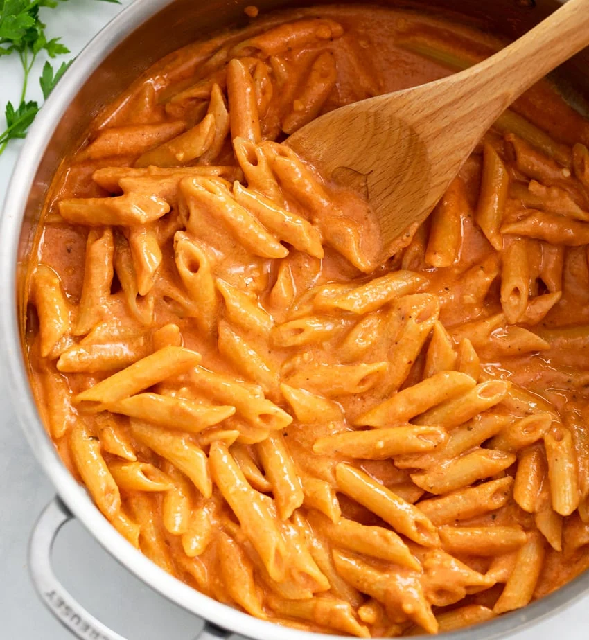

Googsi Pasta

The first time I had this dish, I had a special event to attend a few days later. You know, you gotta buy a dress and such, and I did. My cousin made this pasta after a long day of shopping, and I couldn't stop eating it. I ate so much, the dress wouldn't fit me anymore. So, it's safe to say this was one of the best pasta dishes I ever had.
INGREDIENTS:
Here is what you'll need (measure with your eyeballs):
- Cooking oil
- Chopped onions
- Minced garlic
- Minced meat
- Tomato passata
- Cooking cream
- Pasta (any kind you like)
- Black pepper
- Magi cube seasoning
- Oregano
- Meat spices(optional)
- Salt
- Chilli FLakes
- Shredded cheese(cheddar but if you don't have, mozarella)
Just measure with your eyeballs, taste along the way and it'll be alright. Unless you suck at cooking, get someone else to do this for you, if you have someone else that is.
STEPS:
- First, fill up the pasta's pot with water and season it until it tastes salty like your tears (or ocean whichever you like). Only add the pasta once the water boils.
- While the water is heating up, you can start frying the other stuff. Heat up oil in a deep kinda pot. Fry your onions for a bit, like until kinda transparent or a bit golden, then add your garlic and fry for a bit longer. Ya know, let it be all fragrant and whatnot.
- Then, add your minced meat, if you like a lot, add a lot but it doesn't need that much for this dish. Fry until almost cooked, then add your spices except salt and taste along the way. Be careful with the amount of salt. I think it's best to wait until you're fully done before you add any salt.
- Now, pour in your passata and cooking cream and let it do it's thing. You can add a bit of pasta water in this step if you feeling fancy. Let it boil for a bit and such. Oh yeah, I forgot. If your water boiled during all this process, I hope you actually cooked your pasta.
- Once it boils a bit, add your cooked pasta, boil some more then add your cheese. I usually use mozarella but the first time I ate this dish, it had both mozarella and cheddar and it was GOOD.
- Now, you have finally acquired the sexiest pasta dish. All thanks to me.
EXTRA TIPS:
- If you like it more on the red side, just add more passata than cream and vice versa.
- Eat this while it's hot please, it tastes best that way with some soft drink. MMMM! ლ(▀̿̿Ĺ̯̿̿▀̿ლ)
- Please eat wisely or you'll be stuck in a food coma and none of your clothes will fit you anymore.
Click here to go back.